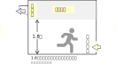
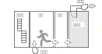

2021年
問題102 火災時の排煙対策に関する次の記述のうち，最も不適当なものはどれか．
（1）自然排煙方式では排煙窓の他に，当該室の下部に給気経路を確保することが望ましい．
（2）排煙設備の給気機の外気取入口は，新鮮な空気を取り入れるため屋上に設置するのが望ましい．
（3）機械排煙方式では，火災室が負圧になり廊下への漏煙を防止できるが，避難扉の開閉障害が生じるおそれがある．
（4）加圧防煙は，階段室への煙の侵入を防止するため階段室付室や廊下に用いられることが多い．
（5）第2 種排煙の煙排出量は，排煙窓位置での内外圧力差と排煙窓の有効面積で定まる．
2021年
問題102 正解（2） 頻出度AAA
煙の浮力を考慮すると，排煙機は屋上に設置し，煙の再吸込みを防ぐために，給気機は低層部に，外気取入口は地上レベルに設ける．
-(1) 自然排煙2021-102-1図参照．
2021-102-1図 自然排煙

-(3) 機械排煙2021-102-2図参照．
2021-102-2図 機械排煙

-(4) 加圧防煙2021-102-3図．
2021-102-3図 加圧防煙

-(5) 第2種排煙（2021-102-4図）は第2種機械換気と同じで，煙排出量（換気量）は排煙機等の生み出す圧力差と排煙窓（開口部）の有効面積から求められる．
2021-102-4図 第2種排煙